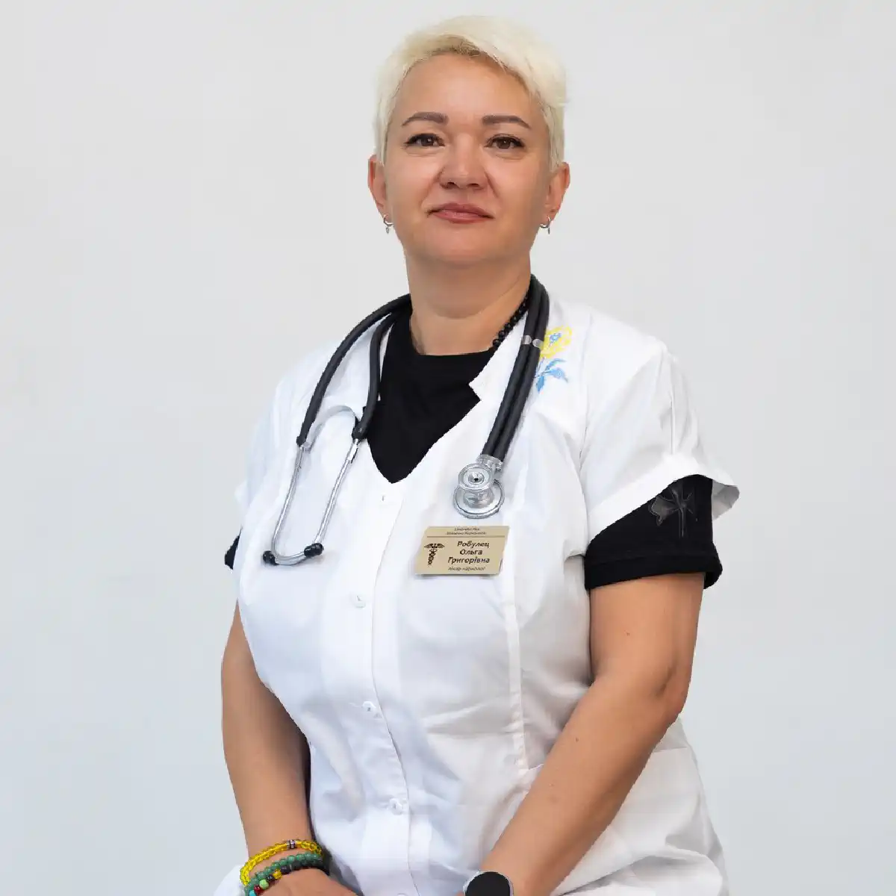

+38(068) 79 72 782
+38(068) 79 72 782Нарколог додому Запоріжжя
Анонімна наркологічна допомога вдома


Безкоштовна консультація, працюємо цілодобово 24/7
Анонімна наркологічна допомога вдома

Нарколог додому в Запоріжжі — це можливість отримати професійну медичну допомогу без необхідності відвідування клініки. Такий формат лікування особливо актуальний при тяжкій алкогольній або наркотичній інтоксикації, тривалому запої та вираженому абстинентному синдромі. У подібних ситуаціях людині може бути складно самостійно звернутися за медичною допомогою, тому виїзд лікаря-нарколога дозволяє швидко оцінити стан пацієнта і своєчасно розпочати лікування.
Тривале вживання алкоголю або наркотичних речовин призводить до серйозної інтоксикації організму. Продукти розпаду етанолу та інших психоактивних речовин чинять токсичний вплив на нервову систему, серце, печінку та інші внутрішні органи. На тлі такого стану можуть з’являтися слабкість, тремор, порушення сну, стрибки артеріального тиску і сильна тривожність. У деяких випадках стан пацієнта може швидко погіршуватися, тому своєчасна медична допомога має велике значення.
Наркологічна допомога додому включає діагностику стану пацієнта, проведення детоксикаційної терапії, медикаментозну підтримку та рекомендації щодо подальшого лікування. Лікар оцінює загальний стан організму, вимірює артеріальний тиск і пульс, визначає ступінь інтоксикації та підбирає оптимальну схему лікування. За необхідності проводиться інфузійна терапія з використанням крапельниці, яка допомагає прискорити виведення токсинів і відновити водно-сольовий баланс.
Крім детоксикації, лікар може призначити препарати для підтримки роботи серця, печінки та нервової системи, а також засоби для зменшення симптомів абстинентного синдрому. Такий комплексний підхід дозволяє стабілізувати стан пацієнта, зменшити прояви інтоксикації та полегшити загальне самопочуття. Допомога додому дозволяє значно скоротити час очікування медичної підтримки, знизити рівень інтоксикації та запобігти розвитку серйозних ускладнень. Крім того, лікування у звичній домашній обстановці допомагає зменшити стрес для пацієнта і прискорити процес відновлення організму.
Терміновий виклик лікаря-нарколога може знадобитися при різних станах, пов’язаних із вживанням алкоголю або наркотичних речовин. При тривалому вживанні психоактивних речовин організм зазнає серйозної інтоксикації, яка може призвести до порушень роботи нервової системи, серця та внутрішніх органів. Особливо важливо звернутися за медичною допомогою, якщо стан пацієнта швидко погіршується або супроводжується вираженими симптомами отруєння.
Найчастіше необхідність термінового виклику нарколога виникає при тривалому запої, сильній алкогольній інтоксикації або вираженому абстинентному синдромі. У таких ситуаціях людина може відчувати сильну слабкість, головний біль, нудоту, прискорене серцебиття і стрибки артеріального тиску. Нерідко з’являються виражена тривожність, дратівливість, порушення сну і тремор рук. Подібні симптоми свідчать про серйозне навантаження на організм і потребують медичного спостереження.
Стан пацієнта може супроводжуватися погіршенням загального самопочуття, підвищеним потовиділенням, відчуттям внутрішнього напруження і неможливістю нормально відпочивати або спати. За відсутності своєчасної медичної допомоги такі симптоми можуть посилюватися і призводити до тяжчих ускладнень. У більш тяжких випадках можуть з’являтися галюцинації, сплутаність свідомості або дезорієнтація в просторі. Іноді спостерігаються різкі перепади тиску, порушення серцевого ритму і виражене нервове збудження. Такі стани потребують термінового медичного втручання і контролю лікаря, оскільки можуть становити серйозну загрозу для здоров’я пацієнта. Своєчасний виклик лікаря-нарколога дозволяє швидко оцінити стан пацієнта, провести необхідну детоксикацію організму і призначити медикаментозну терапію. Професійна медична допомога допомагає стабілізувати стан людини, зменшити прояви інтоксикації і запобігти розвитку небезпечних ускладнень.
Після звернення до наркологічної служби лікар виїжджає до пацієнта у найкоротші строки. Швидка реакція особливо важлива при тяжкій інтоксикації, тривалому запої або вираженому абстинентному синдромі, коли стан людини може швидко погіршуватися. Прибувши на місце, лікар проводить огляд пацієнта і первинну діагностику стану організму. Під час консультації уточнюється тривалість уживання алкоголю або наркотичних речовин, оцінюється ступінь інтоксикації і перевіряються основні життєві показники — артеріальний тиск, пульс і загальний стан нервової системи.
Після оцінки стану пацієнта лікар підбирає індивідуальну схему лікування. Такий підхід дозволяє враховувати особливості організму, тривалість уживання алкоголю або наркотиків, а також наявність супутніх захворювань. У більшості випадків проводиться детоксикаційна терапія з використанням інфузійної крапельниці. Вона допомагає прискорити виведення токсичних продуктів розпаду алкоголю або наркотичних речовин, відновити водно-сольовий баланс і покращити загальне самопочуття пацієнта. До складу інфузійної терапії можуть входити розчини для детоксикації, вітаміни, препарати для підтримки печінки і засоби для нормалізації обмінних процесів. Завдяки цьому зменшуються симптоми інтоксикації, знижується навантаження на внутрішні органи і поступово стабілізується стан організму.
Лікар може призначити медикаментозну підтримку для стабілізації роботи нервової системи, серця і внутрішніх органів. У деяких випадках застосовуються препарати для нормалізації тиску, зменшення тривожності, покращення сну і полегшення симптомів абстинентного синдрому. Після проведення процедур пацієнт отримує рекомендації щодо подальшого відновлення, режиму харчування і профілактики повторних епізодів уживання.
Лікар-нарколог додому надає широкий спектр медичної допомоги, спрямованої на усунення інтоксикації та стабілізацію стану пацієнта. При тривалому вживанні алкоголю або наркотичних речовин організм зазнає сильного навантаження, порушується робота нервової системи, серця, печінки та інших внутрішніх органів. Тому основне завдання лікування полягає у відновленні нормальної роботи організму, зниженні рівня інтоксикації та полегшенні симптомів абстинентного синдрому.
Під час виїзду лікар проводить первинний огляд пацієнта, оцінює загальний стан організму, вимірює артеріальний тиск, пульс і визначає ступінь інтоксикації. На підставі отриманих даних підбирається індивідуальна схема лікування, яка дозволяє максимально безпечно стабілізувати стан пацієнта.
Нарколог додому може проводити діагностику стану пацієнта, виведення із запою, детоксикацію організму і медикаментозну терапію. Також надається допомога при абстинентному синдромі, який може супроводжуватися вираженою слабкістю, тривожністю, безсонням, тремором рук і стрибками артеріального тиску. За необхідності лікар проводить консультацію і надає рекомендації щодо подальшого лікування залежності. Комплексний підхід дозволяє не лише покращити стан пацієнта, а й знизити ризик повторних запоїв. Своєчасна медична допомога допомагає стабілізувати стан організму, зменшити прояви інтоксикації і створити умови для подальшого відновлення здоров’я.
Крапельниця від алкоголю є одним із основних методів медичного виведення із запою і лікування алкогольної інтоксикації. Інфузійна терапія допомагає прискорити виведення токсичних продуктів розпаду алкоголю, відновити водно-сольовий баланс і стабілізувати роботу внутрішніх органів. Завдяки внутрішньовенному введенню розчинів лікарські речовини починають діяти значно швидше, що особливо важливо при тяжкому стані пацієнта.
Під час запою в організмі накопичуються токсичні сполуки, насамперед ацетальдегід, які негативно впливають на нервову систему, серце, печінку і обмінні процеси. Це призводить до появи слабкості, головного болю, нудоти, тремору, тривожності та порушення сну. Крапельниця дозволяє знизити рівень інтоксикації і полегшити стан пацієнта вже в перші години після проведення процедури.
До складу крапельниці можуть входити детоксикаційні розчини, вітаміни, препарати для підтримки печінки, засоби для стабілізації артеріального тиску і медикаменти для нормалізації роботи нервової системи. Також можуть застосовуватися препарати, спрямовані на відновлення обміну речовин і підтримання роботи серцево-судинної системи. Підбір препаратів здійснюється лікарем індивідуально з урахуванням стану пацієнта, тривалості вживання алкоголю і наявності супутніх захворювань. Така терапія допомагає зменшити прояви інтоксикації, полегшити симптоми похмілля, знизити навантаження на внутрішні органи і прискорити відновлення організму. Після проведення інфузійної терапії багато пацієнтів відзначають покращення самопочуття, зменшення слабкості, нормалізацію тиску і покращення сну. Правильно підібране лікування під контролем лікаря дозволяє безпечно вийти зі стану запою і розпочати процес відновлення здоров’я.
Крапельниця при наркотичній інтоксикації спрямована на очищення організму від токсичних речовин і стабілізацію стану пацієнта. Наркотичні речовини чинять сильний вплив на центральну нервову систему, порушують роботу серця, печінки та інших життєво важливих органів. При передозуванні або тривалому вживанні наркотиків в організмі накопичуються токсичні сполуки, які можуть викликати серйозні порушення самопочуття. Саме тому своєчасна медична допомога відіграє важливу роль у запобіганні ускладненням.
Детоксикаційна терапія допомагає прискорити виведення наркотичних речовин і продуктів їх розпаду з організму. Внутрішньовенне введення розчинів сприяє очищенню крові, відновленню водно-сольового балансу і нормалізації обмінних процесів. Завдяки інфузійній терапії зменшується вираженість інтоксикації, покращується загальний стан пацієнта і знижується навантаження на внутрішні органи.
Під час лікування лікар-нарколог оцінює стан пацієнта і підбирає індивідуальну схему терапії. До складу крапельниці можуть входити детоксикаційні розчини, вітаміни, препарати для підтримки роботи серця і печінки, а також медикаменти, спрямовані на стабілізацію нервової системи. За необхідності лікар може призначити засоби для зменшення проявів абстинентного синдрому, таких як тривожність, дратівливість, безсоння і виражена слабкість.
Комплексна медична допомога дозволяє полегшити стан людини і розпочати процес відновлення організму. Після проведення детоксикації зменшуються симптоми інтоксикації, стабілізується робота внутрішніх органів і покращується загальне самопочуття пацієнта. Подальше лікування може включати медикаментозну підтримку, психологічну допомогу і рекомендації щодо відновлення здоров’я.
Вартість виклику нарколога додому починається від 2199 грн.
Існують ситуації, за яких відкладати виклик лікаря-нарколога категорично не можна. При тяжкій алкогольній або наркотичній інтоксикації стан пацієнта може швидко погіршуватися і супроводжуватися небезпечними симптомами, пов’язаними з порушенням роботи нервової системи, серця і внутрішніх органів. У подібних випадках зволікання може призвести до серйозних наслідків, тому вкрай важливо своєчасно звернутися за медичною допомогою.
Особливо важливо викликати лікаря, якщо людина перебуває у тривалому запої і відчуває виражену слабкість, сильну нудоту або багаторазове блювання. Тривожними ознаками також є різкі стрибки артеріального тиску, прискорене серцебиття, біль у ділянці серця і помітне погіршення загального самопочуття. Такі симптоми можуть вказувати на тяжку інтоксикацію організму і потребують обов’язкового медичного спостереження.
Серйозну небезпеку становлять стани, що супроводжуються порушеннями психоемоційного стану. Галюцинації, втрата орієнтації в просторі, сплутаність свідомості і виражене нервове збудження можуть свідчити про розвиток тяжких ускладнень, включаючи алкогольний делірій. Іноді такі стани супроводжуються сильною тривожністю, безсонням і вираженим тремором рук, що вказує на розвиток тяжкого абстинентного синдрому.
У подібних ситуаціях своєчасна медична допомога дозволяє швидко оцінити стан пацієнта, провести детоксикацію організму і призначити необхідну терапію. Професійна допомога лікаря-нарколога допомагає стабілізувати стан людини, зменшити прояви інтоксикації, знизити навантаження на внутрішні органи і запобігти розвитку серйозних ускладнень.
Алкогольна або наркотична інтоксикація може виникнути в будь-який час доби, тому можливість цілодобового виклику лікаря є важливою частиною наркологічної допомоги. У стані тяжкої інтоксикації або абстинентного синдрому самопочуття людини може різко погіршуватися, і в таких ситуаціях вкрай важливо отримати професійну медичну підтримку якомога швидше. Цілодобова допомога дозволяє оперативно відреагувати на погіршення стану пацієнта і запобігти розвитку небезпечних ускладнень. Лікар-нарколог може приїхати до пацієнта в будь-який час дня і ночі, провести огляд, оцінити ступінь інтоксикації і призначити необхідне лікування. За необхідності проводиться детоксикаційна терапія, спрямована на очищення організму від токсичних речовин і стабілізацію роботи внутрішніх органів.
При тривалому вживанні алкоголю або наркотичних речовин організм зазнає серйозного навантаження. Порушується робота серцево-судинної системи, нервової системи і обмінних процесів. У людини можуть з’являтися сильна слабкість, головний біль, тривожність, безсоння, тремор рук, стрибки тиску і прискорене серцебиття. У деяких випадках стан може супроводжуватися сплутаністю свідомості, дезорієнтацією або вираженим нервовим збудженням. Своєчасний виклик лікаря дозволяє швидко оцінити стан пацієнта і розпочати необхідне лікування. Лікар проводить діагностику, контролює основні життєві показники і за необхідності призначає медикаментозну підтримку. Часто застосовується інфузійна терапія з використанням крапельниці, яка допомагає прискорити виведення токсинів з організму, відновити водно-сольовий баланс і покращити загальне самопочуття.
Крім детоксикації, лікар може призначити препарати для стабілізації роботи серця, нервової системи та внутрішніх органів. У деяких випадках застосовуються засоби для нормалізації тиску, зменшення тривожності та покращення сну. Такий комплексний підхід дозволяє не лише полегшити стан пацієнта, а й знизити навантаження на організм після тривалої інтоксикації. Завдяки своєчасному втручанню лікаря вдається зменшити прояви інтоксикації, стабілізувати артеріальний тиск, нормалізувати роботу нервової системи і покращити загальне самопочуття пацієнта. Оперативна медична допомога значно знижує ризик ускладнень і допомагає швидше стабілізувати стан людини, забезпечуючи безпечне відновлення організму.
Виїзд лікаря-нарколога додому має низку переваг. Такий формат допомоги дозволяє пацієнту отримати професійну медичну підтримку в комфортних умовах без необхідності відвідування клініки. Це особливо важливо в ситуаціях, коли людина перебуває у стані сильної інтоксикації, відчуває виражену слабкість або не може самостійно пересуватися.
Медична допомога додому дозволяє значно скоротити час очікування лікування. Лікар-нарколог приїжджає до пацієнта у найкоротші строки, проводить огляд, оцінює ступінь інтоксикації і підбирає необхідну терапію. Завдяки цьому лікування починається одразу після приїзду лікаря, що допомагає швидше стабілізувати стан пацієнта. Допомога додому забезпечує швидке реагування на погіршення стану пацієнта, дозволяє провести детоксикацію організму і призначити необхідну медикаментозну терапію. Лікар може поставити крапельницю, призначити препарати для підтримки роботи серця, нервової системи та внутрішніх органів, а також засоби для зменшення симптомів абстинентного синдрому.
Ще однією важливою перевагою є психологічний комфорт пацієнта. Багато людей почуваються спокійніше у звичній домашній обстановці, що сприяє швидшому відновленню. Відсутність необхідності транспортування пацієнта до клініки знижує фізичне навантаження і зменшує стрес. Крім того, лікування в домашніх умовах дозволяє зберегти конфіденційність і уникнути зайвої уваги з боку оточуючих. Такий формат медичної допомоги робить лікування більш доступним і зручним для пацієнта, а також сприяє швидшому відновленню після інтоксикації і стабілізації загального стану організму.
Для багатьох пацієнтів важливим фактором при зверненні за наркологічною допомогою є конфіденційність лікування. Нерідко люди відкладають візит до лікаря через страх розголосу, осуду з боку оточуючих або можливих проблем на роботі. Залежність і надалі залишається темою, про яку багато хто воліє не говорити відкрито, тому людина може довгий час приховувати проблему і уникати звернення за медичною допомогою. Саме тому анонімність є одним із ключових принципів сучасної наркологічної допомоги.
Анонімний виклик нарколога дозволяє отримати професійну медичну допомогу без розголошення інформації про пацієнта. Людина може звернутися по підтримку в будь-який час, не побоюючись, що відомості про лікування стануть відомі стороннім. Усі дані про пацієнта і проведені процедури залишаються строго конфіденційними і не передаються третім особам. Лікар приїжджає до пацієнта максимально делікатно, без зайвої уваги з боку оточуючих, проводить огляд, оцінює стан організму і надає необхідну медичну допомогу.
Під час надання допомоги дотримуються всі принципи лікарської таємниці. Інформація про стан здоров’я пацієнта, проведені процедури і призначене лікування використовується виключно для медичних цілей. Медична документація і дані пацієнта захищені і не підлягають розголошенню. Такий підхід дозволяє людині почуватися спокійно і не зазнавати додаткового психологічного тиску. Конфіденційність особливо важлива при лікуванні залежностей, оскільки психологічний стан пацієнта відіграє велику роль у процесі відновлення. Коли людина впевнена, що її особиста інформація не буде розкрита, їй легше ухвалити рішення звернутися по допомогу і розпочати лікування.
Анонімний підхід дозволяє пацієнту зосередитися на відновленні здоров’я і отримати необхідну допомогу без зайвого стресу. Конфіденційність лікування підвищує довіру до лікаря і сприяє більш своєчасному зверненню за медичною підтримкою. Чим раніше людина отримує кваліфіковану допомогу, тим вища ймовірність успішного лікування і повернення до повноцінного життя без залежності.
Наркологічна клініка UmbrellaPlus надає професійну медичну допомогу пацієнтам з алкогольною і наркотичною залежністю. Лікарі центру мають досвід роботи з різними формами залежності і надають кваліфіковану підтримку при алкогольній і наркотичній інтоксикації, вираженому абстинентному синдромі та тривалих запоях. Основна мета лікування — стабілізувати стан пацієнта, усунути наслідки інтоксикації і допомогти організму розпочати процес відновлення. Лікарі клініки проводять комплексну діагностику стану пацієнта, оцінюють ступінь інтоксикації, загальний стан організму і підбирають індивідуальну схему лікування. Такий підхід дозволяє враховувати особливості здоров’я пацієнта, тривалість уживання алкоголю або наркотичних речовин і наявність супутніх захворювань.
Клініка забезпечує виїзд лікаря додому, проведення детоксикаційної терапії, медикаментозну підтримку і консультації щодо подальшого лікування залежності. За необхідності лікар проводить інфузійну терапію, яка допомагає прискорити виведення токсичних речовин з організму, відновити водно-сольовий баланс і покращити загальне самопочуття пацієнта. Додатково можуть призначатися препарати для стабілізації роботи нервової системи, серця і внутрішніх органів. Медична допомога надається цілодобово, що дозволяє пацієнтам отримати підтримку в будь-який час доби. Усі послуги надаються з дотриманням повної конфіденційності і принципів лікарської таємниці, тому інформація про пацієнта і проведене лікування не передається третім особам.
Телефон для консультації та виклику нарколога: +38(050-021-69-57)

Так, ми суворо дотримуємося повної конфіденційності на всіх етапах лікування. Інформація про пацієнта, діагноз та проходження терапії не передається третім особам. Звернення до нас не тягне за собою постановку на облік. Ви можете бути впевнені у безпеці та анонімності.
Програма лікування розробляється індивідуально після консультації з фахівцем. Враховуються вид залежності, її тривалість, фізичний та психологічний стан пацієнта. Такий підхід дозволяє підвищити ефективність терапії та знизити ризик зриву. Ми не використовуємо шаблонні рішення.
Так, ми супроводжуємо пацієнтів і після основного курсу лікування. Проводяться консультації, рекомендації щодо адаптації та профілактики рецидивів. За потреби можлива подальша психологічна підтримка. Це допомагає зберегти результат та повернутися до повноцінного життя.
Анонимно

Никакими усилиями самостоятельно я не смогла преодолеть запой, и наступала ломка, сопровождаемая повышенным давлением и пульсом. Тогда я решила обратиться за помощью в клинику. Врачи оказали мне неоценимую поддержку! Уже прошел месяц, и я не только не употребляю алкоголь, но даже не испытываю к нему желания!
Анонимно
Могу с уверенностью порекомендовать данный центр для тех, кто ищет помощь при выводе из запоя. Я неоднократно обращался к ним и могу сказать, что цена соответствует качеству услуг. После проведения капельницы в клинике, вся тяга к алкоголю проходит, и я чувствую себя гораздо лучше. Это действительно эффективный метод, и я благодарен клинике за их профессионализм и заботу!
Анонимно
Неоднократно я пытался бросить алкоголь самостоятельно, но каждый раз уговаривал себя продолжать. Я сначала ограничивался одной бутылкой в день, потом двумя, и в итоге вновь попадал в запой. Но в итоге, я смог прекратить употребление алкоголя только после того, как обратился в центр Амбрелла и заказал у них услугу вывода из запоя. Уже не пью 3 месяца и удалось полностью восстановиться. Благодарю врача который меня вел - Алексея Валерьевича.
Анонимно
Здравствуйте! Я хотел бы выразить свою искреннюю благодарность клинике за быстрое и профессиональное освобождение моего мужа пивного рабства! Ранее у меня уже не было никаких надежд на его выздоровление. Однако, благодаря вашим перспективным методам лечения, мы теперь идем к полному отказу от алкоголя. Вы дали нам новую надежду и оказали неоценимую помощь! Спасибо вам за все!
Анонимно
Я долгое время страдал от запоев и не мог справиться с этой проблемой. Однако, когда я обратился в этот центр, они быстро помогли мне вернуться на ноги, и самое главное - предоставили мне возможность не возвращаться к запоям. Уже почти полгода я не испытываю запоев! Это для меня настоящее чудо, я никогда не думал, что смогу так преодолеть свои проблемы. Большое спасибо центру Амбрелла!
Анонимно
Благодарю ваш центр Амбрелла за оперативное и высококачественное лечение! Женский алкоголизм - это настоящее горе, с которым невозможно справиться в одиночку. Я уже потеряла надежду, но благодаря вашей помощи, она вернулась ко мне! Отдельная благодарность врачу Станиславу Вячеславовичу, а также благодарность Богу за то, что он послал мне такое чудо как ваша центр! Спасибо вам всем!
Анонимно
Хочу выразить благодарность врачу Владиславу Алексеевичу за то, что вы избавили меня от этого ужаса. Я уже был в отчаянии, перепробовал множество клиник и центров, но только здесь я наконец получил настоящую помощь! Алкоголь полностью разрушил меня, и если бы не ваша помощь, я, возможно, уже не был бы жив. С вами я смог вернуть себе жизнь и буду благодарен вам всегда!
Номер телефону:
+380 (68) 797 27 82
+380 (50) 021 69 57
Адресу наркологічного центра вашого міста уточнюйте за
телефоном
Працюємо: Київ, Одеса, Львів, Харків, Дніпро, Запоріжжя,
Черкасах, Чугуєві, Чорноморську, Кам'янському
Telegram: t.me/umbrellaplus
Графік работы: Цілодобово